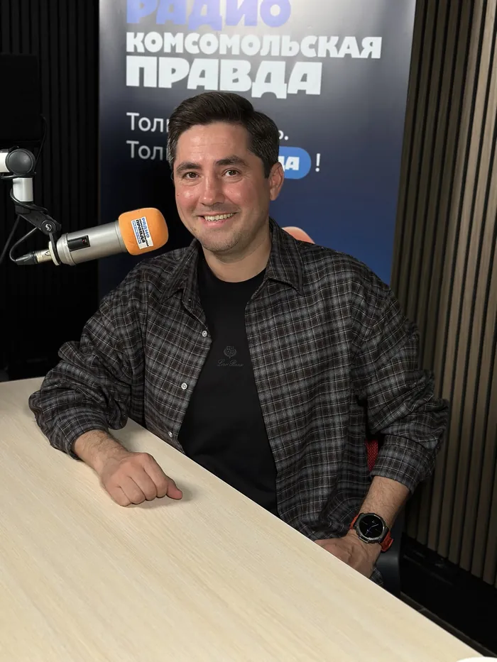
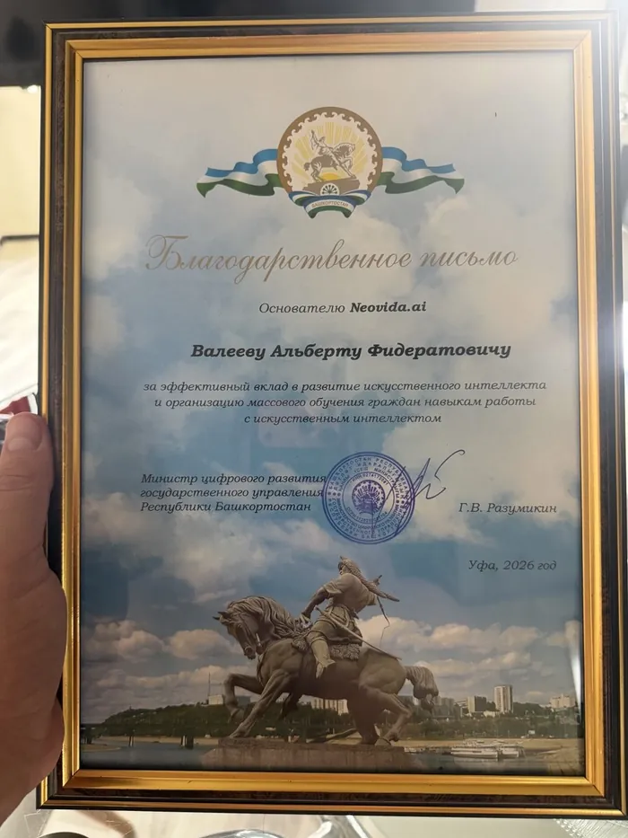
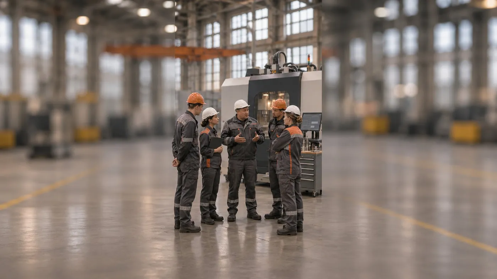

Альберт Валеев
Эксперт по внедрению ИИ в бизнес. Основатель школы ИИ neovida.ai, автор методики «ИИ‑мышление»
Лицензия: образовательная, Минпросвещения РБ (если спросят). Коротко, 30 секунд. Главное: мы учим не айтишников, а обычных сотрудников, руководителей и госслужащих. Две цифры: больше 2000 человек, больше 20 проектов внедрения.



Учим сотрудников думать вместе с ИИ
Можно пропустить, если время поджимает. Смысл: у нас не теория, мы каждую неделю учим живых людей и видим, где они застревают.

Мотор поставили.
Рост не пришёл
Почти 40 лет от первой электростанции до роста. Эффект дал не мотор, а перестройка цеха и обученный рабочий. История для заводского зала. Технологию купили, а мышление цеха осталось паровым. С ИИ то же самое: дали сотрудникам нейросеть, а думают они по-старому.
30 лет назад в резюме писали «уверенный пользователь ПК». Сегодня требуются уверенные пользователи ИИАлександр Ведяхин, первый зампред Сбера, «Ведомости», 23.07.2025



Про жёсткие и мягкие навыки все знают. Клик: появился третий класс. Это не знание программ. Это умение думать вместе с ИИ.

Мастер смены
Можно добавить: мастер Toyota Мицуру Каваи (2014): «Чтобы быть хозяином машины, надо уметь её научить». Показать на одном человеке. Мастер не изучал программу. Он понял принцип, нашёл свою выгоду и знает, что спросить. Поменяется нейросеть, сценарий останется.